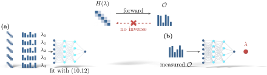

Page 9 of 9 of this session
10.8 Closing summary

In this session we used the variational principle and the matrix product states of Section 7.4 and Section 7.10, and the mean-field decoupling of Section 1.12. We also used the two ways of telling phases apart, a local order parameter as in Section 1.11 and a topological invariant as in Section 3.5. What we found is the following.
A deep neural network is a parametric function that is trained by minimizing a loss function with gradient descent, equation (10.1). Every other construction in this session is a specific choice of input, output and loss built on top of this one template.
Neural network quantum states replace the explicit storage of the \(2^L\) coefficients of a wavefunction with a network \(C_\theta(s)\), equation (10.2). This network is trained by using the variational energy as the loss function, equations (10.3) to (10.5). For a network that is large enough, NNQS is above the matrix product states of Section 7.4 and the PEPS of Section 7.11 in the variational hierarchy. It imposes the least structure of all the ansätze of this course. The same ansatz, fitted by maximum likelihood instead of energy minimization, approximates a measured state in quantum state tomography with far fewer parameters than \(2^L\), when the counts are taken in more than one basis.
Tensor networks, built from the matrix product state ansatz (10.6) and its generalizations to trees, MERA and PEPS, can be used in the reverse direction as machine-learning architectures. For image classification on Fashion-MNIST, this reaches 95.38% training accuracy and 88.97% test accuracy, which is comparable with conventional neural networks.
Density functional theory is based on the Hohenberg-Kohn functional (10.7) and the Kohn-Sham self-consistency loop (10.8). Machine learning enters in two ways. It can learn the unknown exchange-correlation part of (10.8), and then the self-consistency loop stays the same. Or it can learn the whole map from potential to density directly, and then the self-consistency loop is removed completely.
Phase classification uses one more time the split of this course between local order parameters and topological order. The Ising model (10.9) is the easy case, which can be detected locally and follows the logic of Session 1, Session 5 and Session 6. The Ising gauge theory (10.10) is the hard case, where no local order parameter distinguishes the low-temperature and high-temperature regimes. These are separated only by a crossover, and the case follows the logic of Session 3 and Session 4. A trained network succeeds where the naive order parameter fails.
Hamiltonian learning treats the inference of a Hamiltonian from measured observables, equation (10.11), as the inverse of the first step of Session 1, in Section 1.4. We train a network on synthetic forward data, equation (10.12), and apply it to real experimental observables, and in this way we close the loop in practice and not only in principle.
After this session we can do the following tasks, and each of them has the section that teaches it.
- Write a use of a network as a choice of input, output and loss, and train it with (10.1). Section 10.2.
- Estimate the memory of a wavefunction of \(L\) spins, and compare it with a matrix product state of bond dimension \(D\). Sections 10.3a and 10.4.
- Write the energy (10.3) as an average of the local energy (10.4), and say why it is never below \(E_0\). Sections 10.3a and 10.3b.
- Say which part of a quantum state a tomography in one basis cannot give. Section 10.3.1.
- Say why a learned \(v_{\rm xc}\) keeps the diagonalization of (10.8), and a learned map \(v_{\rm ext}\mapsto n\) removes it. Section 10.5.
- Tell the local order parameter of the Ising model (10.9) from the plaquette products of the gauge theory (10.10). Sections 10.6a and 10.6b.
- Build a training set for Hamiltonian learning (10.12) that covers the hidden variables. Section 10.7.
We started this course by asking how a small number of identical atoms, arranged in a lattice, can give rise to a phenomenology as rich as the one that we studied in ten sessions. This includes charge density waves, magnets, superconductors, topological insulators, fractional excitations, spin liquids and more, and none of it can be seen in a single atom alone. To answer this question we went through second quantization and the mean-field theory of Section 1.12, and through Bloch’s theorem of Section 2.5 and the topological invariants of Section 3.5. Then came the Nambu spinors of Section 5.8, the magnon spectra of Section 6.13, the tensor networks of Section 7.4 and the parton constructions of Section 8.8. At the end we used linear response as a diagnostic for all of them, in Section 9.1.
This session closed the arc in two ways. First, it showed that a neural network can take the place of the many-body wavefunction itself. Second, it showed that all the forward methods of the course, with a Hamiltonian as input and an observable as output, can be run backward to infer the Hamiltonians of real materials. This is a good place to end the course, not with a final answer, but with a general method to ask the question again, for the next quantum material that we want to understand.
A network is trained by gradient descent on a loss. For the squared loss this is
\[\mathcal{L}(\theta) = \sum_n \left\| f_\theta(x_n) - y_n \right\|^2, \qquad \theta \;\longrightarrow\; \theta - \eta\, \nabla_\theta \mathcal{L}(\theta).\]
Here \(x_n\) is an input, \(y_n\) its label and \(\eta\) the learning rate. The constructions range from a cat-and-dog classifier to a neural network quantum state. Which choices define each construction of this session?
Show the answers
- A. ✗ False
This is false. The cat-and-dog classifier and the phase classifier can use the same architecture. They differ in the input, an image or a spin snapshot, and in the meaning of the one-hot label. The squared loss above and the training step are the same.
- B. ✓ True
This is true. The phase classifier uses a spin array, a label and the squared loss above. The neural network quantum state uses a configuration, a coefficient and the energy, with the same gradient descent.

Figure 10.1, shown again. The template that every construction uses, with an input, an output and a loss. - C. ✗ False
This is false. The same spin chain is used for the NNQS, with the energy as the loss, and for tomography, with the likelihood. The system is the same and the construction differs, and the NNQS can be a Boltzmann machine and not a tensor network.
Each option gives the input, the output and the loss of a network. Which one makes a neural network quantum state?
Here \(s\) is a spin configuration and \(C_\theta(s)\) a coefficient of a wavefunction. \(\mathcal O\) is an observable, \(\lambda\) a parameter of a Hamiltonian and \(E[\theta]\) the variational energy.
Show the answers
- A. ✗ False
This is false. This is the phase classifier of the Ising snapshots. Its output is a label for the phase, which must be known for every training snapshot, and not a coefficient of a wavefunction.
- B. ✓ True
This is true. The network gives the coefficient \(C_\theta(s)\) of each configuration, and the loss is the variational energy, which is never below the ground-state energy \(E_0\). No label is needed, since the Hamiltonian itself tells how good the state is.
- C. ✗ False
This is false. This is Hamiltonian learning. Its output is a parameter of the Hamiltonian, and every training pair needs its \(\lambda\), which a simulation gives by construction.